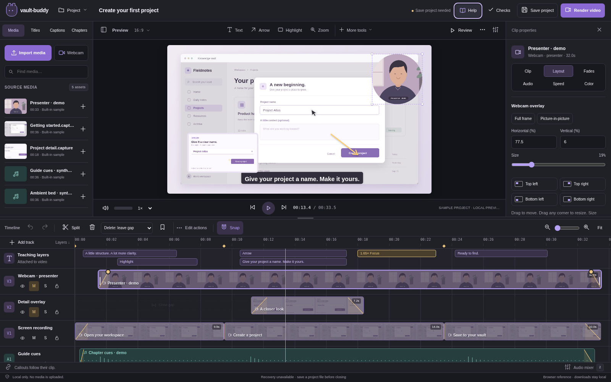

Product & experience
Scope, behavior and the complete current UI.
The complete product and implementation reference: an editable workspace, multi-track media, presenter overlays, teaching tools and an optional guided walkthrough. Save the project. Render its products. Continue editing whenever needed.

Scope, behavior and the complete current UI.
Grounded in the application's actual stack and capture code.
Execution packages, contracts and focused starter examples.
Executed evidence separated from native release gates.